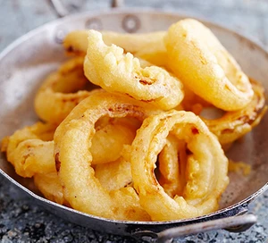

Onion Rings

You can rustle up these crispy bites with a few storecupboard ingredients - sparkling water is the key to a really light batter
Ingredients
- 1 large onion, cut into 1cm slices, rings separated
- groundnut oil, for deep frying
- 150g self-raising flour
- 180ml sparkling water
Method
- Use a fork to steady your onion. Slice the onion into rings about 1cm wide. Remove the skin and separate the rings.
- Heat the oil to 180C in a heavy-based pan – it should be no more than 1/ 3 full.
- Meanwhile put the flour and sparkling water in a bowl and season generously. Whisk together to form a batter.
- Coat a small batch of onion rings in batter. Carefully lower into the hot oil and deep-fry until crisp and golden, about 2 - 3 minutes. Remove with a slotted spoon and place on a piece of kitchen towel to drain. Repeat with the remaining onion and batter.